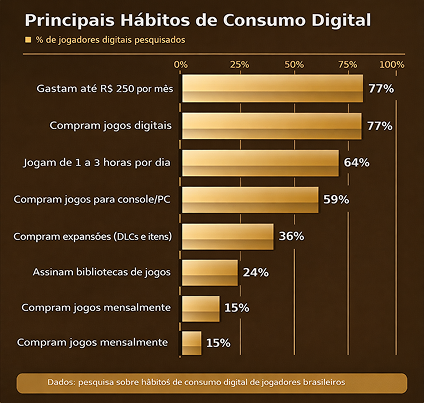
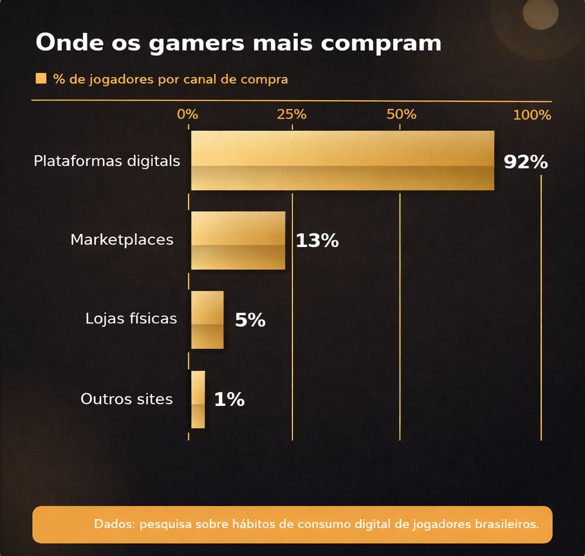
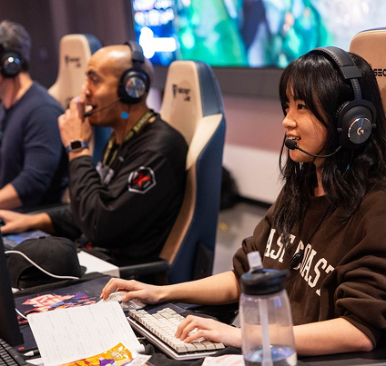
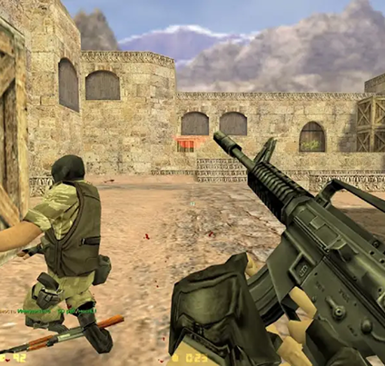
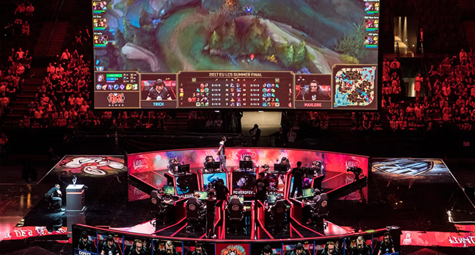

CONTEÚDO ADICIONAL
Este espaço reúne os principais aprendizados da nossa pesquisa sobre o comportamento de compra de gamers brasileiros e como essas descobertas orientaram o desenvolvimento do DropGames. Em vez de olhar apenas para o preço, analisamos contexto, hábitos de consumo e decisões reais de jogadores que precisam fazer o orçamento caber no fim do mês.
Jogar mais, Gastar menos.

BRASIL. PAÍS DE GAMERS
Com 77% dos jogadores gastando até R$ 250 por mês com games e conteúdos digitais, são potencialmente R$ 3.000 por ano saindo do bolso, muitas vezes sem qualquer comparação de preços. Cada decisão impulsiva em uma loja diferente representa menos recursos para novos títulos e experiências.

FRAGMENTADO
Pagar mais caro pelo mesmo jogo é mais comum do que parece. O DropGames nasceu para mudar isso. Nossa missão é reunir em um só lugar os preços dos principais jogos disponíveis nas maiores lojas do mercado, para que você sempre encontre a melhor oferta antes de comprar – sem precisar abrir várias abas ou decorar datas de promoção.

CENTRALIZAÇÃO
A cada busca, o DropGames organiza em uma única tela lojas, plataformas e valores. Sem adivinhação, sem planilha paralela – apenas a informação certa, no momento certo, para você economizar e transformar o mesmo orçamento em mais horas de jogo.

ACESSIBILIDADE
Na DropGames, acreditamos que jogar é mais do que entretenimento – é conexão, aprendizado e comunidade. Por isso, nossa proposta vai além de encontrar o menor preço: queremos aproximar jogadores de diferentes realidades econômicas de títulos que antes pareciam inacessíveis.
DEMOCRATIZAÇÃO
Ao comparar preços de múltiplas lojas em um só lugar e destacar oportunidades reais de economia, o DropGames ajuda a democratizar o acesso aos jogos digitais. O foco é permitir que mais pessoas aproveitem lançamentos e clássicos sem depender de “achismos” ou de amigos que acompanham promoções o tempo todo.
USER EXPERIENCE
Interface intuitiva, foco em clareza de informação e conteúdo em português tornam o DropGames amigável tanto para quem está começando a montar sua biblioteca digital quanto para quem já é veterano de promoções. Menos tempo perdido na busca; mais tempo dedicado ao que importa: jogar.

Por que nossa pesquisa foi feita assim?
Em vez de partir apenas de dados frios, escolhemos combinar números com histórias reais de jogadores. Conversamos com pessoas que aproveitam grandes promoções de plataformas digitais, com quem compra jogos parcelados em lojas físicas e com quem precisa escolher cuidadosamente cada título que entra na biblioteca.
A partir dessas conversas, estruturamos uma metodologia que olha para frequência de compra, ticket médio, plataformas preferidas e, principalmente, frustrações com preços e experiências de loja. Cada insight coletado virou um requisito para o DropGames: da forma como exibimos informações até a prioridade de funcionalidades que realmente ajudam o usuário a decidir.
O resultado é uma aplicação que nasce alinhada ao comportamento do gamer brasileiro, preparada para crescer junto com o mercado e flexível para receber novos dados, gráficos e comparações à medida que o projeto evoluir. O conteúdo adicional desta página existe justamente para mostrar que por trás de cada tela há um estudo cuidadoso sobre como as pessoas jogam, compram e planejam seus próximos games.